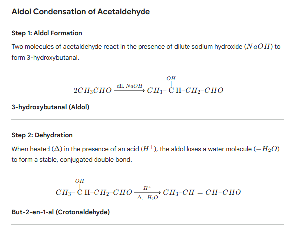
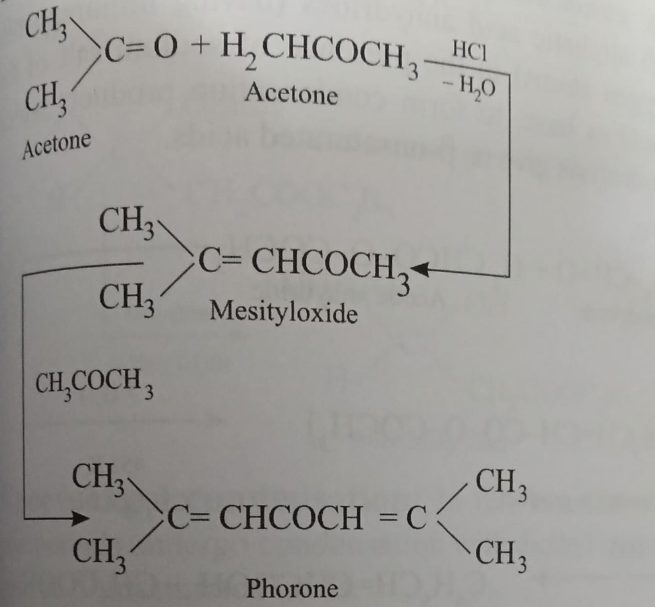
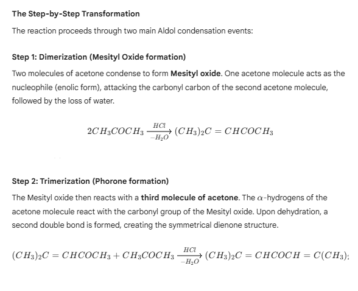
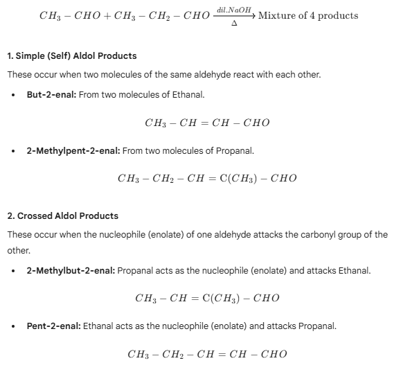
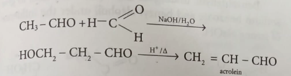
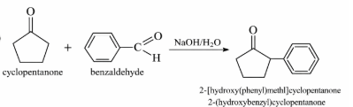
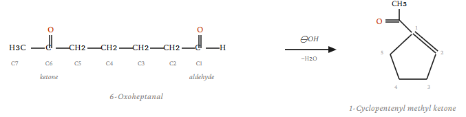

Definition
Aldol condensation is an important organic reaction in which two molecules of
aldehydes or ketones containing at least one α-hydrogen react in the presence
of a base or acid catalyst to form a β-hydroxy aldehyde or β-hydroxy ketone
(known as an aldol). On heating, this product usually loses water to form an
α,β-unsaturated carbonyl compound.
Example
A classic example is the condensation of two molecules of acetaldehyde in the
presence of dilute sodium hydroxide.

Aldol condensation of Acetone.
1. ACETONE → MESITYL OXIDE

2. ACETONE → PHORONE

Cross aldol condensation
Aldol condensation between two different aldehydes or ketones is known as cross aldol condensation.
For example, a mixture of ethanal and propanal when heated with dilute NaOH solution gives four different products.

The last two products are the real cross products. If only one carbonyl group contains alpha hydrogen, then only one cross product is formed.
A useful example of crossed aldol condensation to give specific product is to condense acetaldehyde with formal-dehyde in the presence of a base.

When a mixed aldol condensation occurs between an aldehyde and a ketone, the aldehyde is always the electro-phile due to
lower activity of the ketone carbonyl group.

Cyclízations via aldol condensation
Five or six membered rings can be conveniently synthe-sized by an intramolecular aldol condensation. The follow-ing ketoaldehyde cyclizes to give 1-cyclo pentenyl methyl ketone
